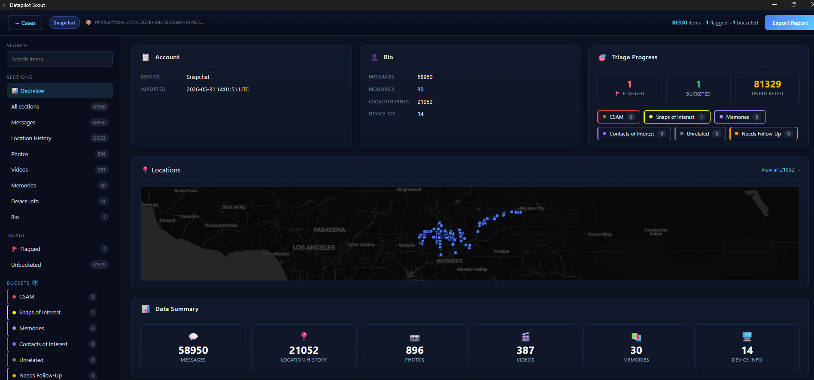
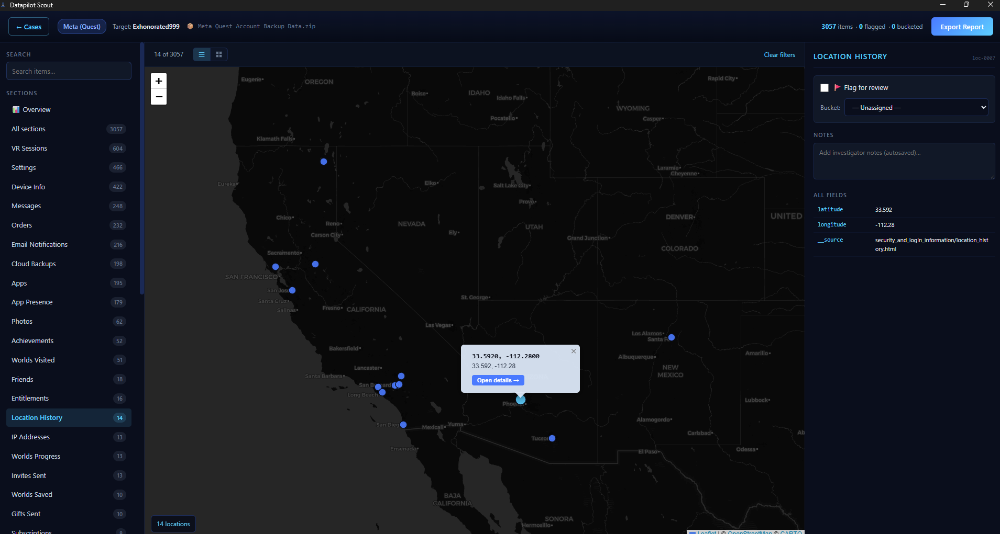
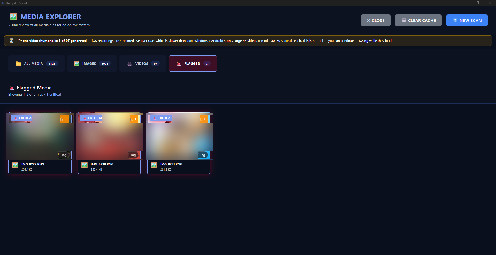

Purpose-built triage software for law enforcement agencies. Quickly identify contraband and investigative leads by scanning targeted locations — not entire drives. Now with Warrant Return Triage and iOS Live Triage (BETA).
Built for Law Enforcement & Investigative Agencies
Scout is a triage tool — not a forensic imager. It scans targeted locations where contraband is commonly stored, giving investigators actionable leads in minutes without the hours-long overhead of a full-disk review.
Drop in a provider return ZIP — Scout parses Meta, Snapchat, and Google packages into searchable timelines, location maps, and account summaries. Hash and keyword lists run across the return, and flagged evidence exports to standalone reports anyone on the team can review — no Scout install required.
Plug an iPhone or iPad straight into the workstation — no jailbreak, no third-party backup, no cloud. Pull device info plus an in-app Media Explorer with thumbnails, EXIF, and Project VIC hash matching.
Extract and analyze browser history from devices. Quickly surface suspicious URLs, search terms, and browsing patterns relevant to the investigation.
Import known-contraband hash databases and cross-reference files in targeted locations. Parallel scanning across all CPU cores delivers results 10-50x faster — matches are flagged instantly.
Run keyword lists against file names, paths, and browser artifacts to surface investigative leads. Customizable per case for precise, targeted results.
Automatically compiles images and videos from common contraband locations into a single review interface with thumbnail previews — no manual folder-by-folder digging required.
Detect signs of unauthorized access, suspicious applications, and anomalous system activity that may indicate evidence of criminal behavior.
Generate court-ready triage reports with evidence thumbnails, hash values, and case metadata. Document findings for follow-up forensic analysis.
Scout is designed for simplicity. Three steps from download to your first investigation.
Download the Desktop or Portable USB edition, run setup, and Scout is ready — no complex configuration required.
Enter your agency details on first launch. Your 30-day trial begins immediately with full feature access.
Connect a device, import hash lists, and begin scanning. Generate reports when you're ready to document findings.
Provider returns are now searchable in minutes, not days. Drop in the ZIP from Meta, Snapchat, or Google and Scout parses the whole package into a navigable triage view — account summary, contacts, messages, devices, login IPs, and a location map you can actually read. Then run your hash lists and keyword sets across the return to surface the messages, contacts, and media that matter to the case.


Plug an iPhone or iPad straight into the workstation, trust the computer, and Scout pulls device info plus an in-app Media Explorer with thumbnails and EXIF — no jailbreak, no third-party backup, and nothing leaves the box.

Scout doesn't scan every file on a drive. It targets specific directories and artifact locations where contraband and evidence are commonly stored — delivering fast results during time-sensitive investigations.
Load industry-standard hash lists and Scout will automatically flag any files that match during scanning. No manual cross-referencing required.
Generate comprehensive forensic reports directly from your scan results. Every report includes the metadata, hash values, and evidence documentation needed for legal proceedings.
Every agency gets a full-featured 30-day trial. No credit card required. When you're ready, activate a license key to continue.
Full access to all features during your evaluation period.
Perpetual license with ongoing access for your agency.
Choose the edition that fits your workflow. Both include a full-featured 30-day trial. Register your agency on first launch — no credit card required.
Install on your workstation. Full scanning suite including Windows, USB drives, Android devices, and iOS backup analysis.
Install onto a USB flash drive. Take Scout into the field to scan suspect computers and USB drives on-site — no installation on the target machine.
v1.0.6 Desktop · v1.0.7 Portable USB · Windows 10/11 · x64 · 30-day free trial
Datapilot Scout is a digital forensic triage and preview tool, not a complete forensic analysis platform. Results may vary depending on device state, operating system version, and configuration. Scout is intended to assist—not replace—qualified forensic examiners.